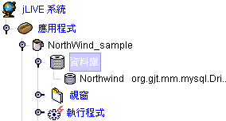
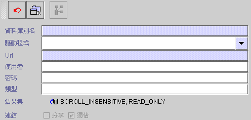
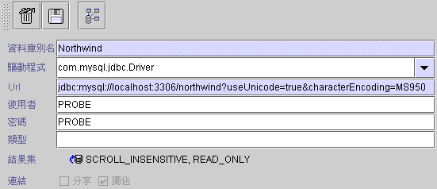
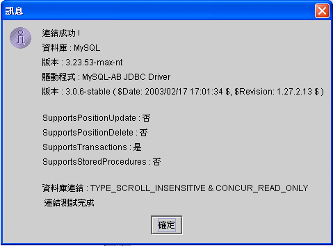
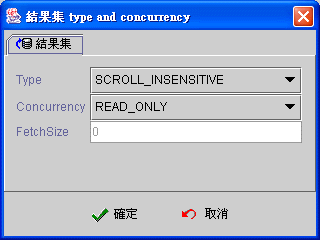

|

|
 |
Chapter 5
Database |
 |
5.
資料庫 (database)
新增資料庫 (create
new database)
jLIVE Builder™ 系統透過 jLIVE™ middle ware 與 JDBC
的連結，操控後端的資料庫系統 (database system)。jLIVE™ middle ware
會根據所使用的 JDBC 驅動程式之支援性，適時調整系統內部的作業狀態。應用程式可同時連結多個不同的資料庫系統 (database
system)，每個資料庫系統在設計時，皆以所謂的資料庫別名 DB Alias
參照使用，資料庫設計時如果不使用到個別的資料庫特殊功能，原則上資料庫系統是可以在不改變程式碼而可按需求隨時轉換更替。如果使用異地多應用伺服器同時存取
(multiple application server access simultaneously)，設定頁會出現 jLIVE™ middle ware 的別名，設計師必須選取此資料庫所在的 jLIVE™ middle ware 。
5.1 新增資料庫 (create new
database)

請先點選【資料庫】節點，按下右方 新增資料庫
 (出現下方資料庫設定頁) 。
(出現下方資料庫設定頁) 。

以示範程式 (jNorth) 為例，當填寫資料庫設定之後，按下 新增
( 新增資料庫 ) 。
-
取消 ( cancel create
database operation )
 (取消新增動作 )。 (取消新增動作 )。
-
新增 (create new database)
( 新增資料庫系統)。

-
測試 (
test database connection )
( 測試連結資料庫
) 按驅動程式及URL的設定，透過 jLIVE™ middle ware
連結資料庫，當新增程式之後，可以使用此功能。測試連結後系統會顯示，連結狀態及資料庫驅動程式版本及相關訊息。

-
刪除 (
delete this database )
 ( 刪除此程式 )
移除資料庫參照，當新增程式之後，就會出現此圖示。執行後系統將會移除控制面板上的節點。 ( 刪除此程式 )
移除資料庫參照，當新增程式之後，就會出現此圖示。執行後系統將會移除控制面板上的節點。
-
儲存 (
save modified database settings )
 ( 儲存設定
)，當新增程式之後，就會出現此圖示。任何的設定修改後必須存檔。 ( 儲存設定
)，當新增程式之後，就會出現此圖示。任何的設定修改後必須存檔。
-
MW_HTTP (middle ware HTTP)：使用異地多應用伺服器同時存取
(multiple application server access simultaneously)。選取 2nd_HTTP jLIVE™ middle
ware 的別名，預設主要 jLIVE™ middle ware 的名稱為 -- default --。
-
資料庫別名 (DB alias)：資料庫在程式設計時的參照名稱。名稱不可填空白，最好以英文字命名，在同一個應用程式中不可有相同的資料庫別名。
-
驅動程式 (driver)：資料庫的 JDBC
驅動程式。可以在下拉式選單中選取常用的驅動程式 (driver)，系統將會把相對的 URL
樣式填入URL中，只要更改主機及資料庫名稱即可。亦可自行填入未列於常用選單的驅動程式。驅動程式必須在啟動 jLIVE™ middle ware
時正確的安裝，相關資料請查閱 jLIVE™ middle ware 系統。jLIVE™ middle ware 支援 JDBC TYPE1, TYPE2,
TYPE3, TYPE4 的驅動程式。
-
URL：根據驅動程式提供的廠商而有不同的設定方式及樣式，必須參照各家廠商所提供的文件正確的設定。
例如：
-
選擇驅動程式為 com.inet.tds.TdsDrive。
-
URL 列出 jdbc:inetdae:hostname:1433?database=DATABASE&charset=Cp950
之設定，其中 hostname 和
DATABASE 名稱需要更改。
- 假設主機名稱：SUPER，資料庫名稱：DB。
-
將 URL 更改成：jdbc:inetdae:SUPER:1433?database=DB&charset=Cp950
DB Alias：NorthWind
Driver：org.gjt.mm.mysql.Driver
Url：jdbc:mysql://HostName:3306/DatabaseName
DB Alias：ORACLE
Driver：oracle.jdbc.driver.OracleDriver
Url：jdbc:oracle:thin:@HostName:1521:DatabaseName
DB Alias：MSSQL
Driver：com.microsoft.jdbc.sqlserver.SQLServerDriver
Url：jdbc:microsoft:sqlserver://hostname:1433;DatabaseName=database
DB Alias：MSINET
Driver：com.inet.tds.TdsDriver
Url：jdbc:inetdae:HostName:1433?database=DatabaseName&charset=Cp950
* Cp950：中文語系 Cp950 or
MS950 (
日文語系填寫MS932 )
DB Alias：ODBC_ACCESS
Driver：sun.jdbc.odbc.JdbcOdbcDriver
Url：jdbc:odbc:ACCESS_ODBC_Name
DB Alias：SYBASE
Driver：com.sybase.jdbc3.jdbc.SybDriver
Url：jdbc:sybase:Tds:host:port/database
-
使用者 (user)：資料庫登入的使用者名稱。
-
密碼 (password)：資料庫登入的使用者密碼。
-
類型 (schema)：資料庫
Schema，有支援 Schema 的資料庫系統才需設定，目前只作用於 Oracle 資料庫，如果同時存取多個 Schema 時，則以
; 分隔
Schema。
-
結果集 (result set)：JDBC
資料庫執行 SQL statement 時所要產生的結果集 (result set) 的型式。按下編輯結果集系統會出現結果集
Type 和 Concurrency 設定視窗，其中 Fetch Size 採用驅動程式預設值，個別 Fetch Size
由資料來源設定頁，根據實際操作需要給定其值。

-
Type：JDBC
資料庫執行 SQL statement 時所要產生的結果集 (result set) 的型式。
-
FORWARD_ONLY
-
SCROLL_INSENSITIVE
-
SCROLL_SENSITIVE
JDBC version 1.0 不支援 Type 和
Concurrency，使用 JDBC 1.0 驅動程式時，請將 Type 選為 FORWARD_ONLY ，系統內部會自動以不含 Type 及
Concurrency 的函式 (method) 建立 SQL statement。
除非驅動程式不支援，否則不要選用 FORWARD_ONLY，那對系統效率的影響非常大。
關於 JDBC 結果集 (result set) 的型式 各資料庫系統的驅動程式 (driver)
實作的機制不盡相同，請參各資料庫系統的驅動程式的說明。一般而言，FORWORD_ONLY 會以資料串流的型式，擷取結果集 (result
set)，驅動程式不會 cache 結果集資料，適用於大資料讀取時應用，例如：使用【複製資料來源至另一資料來源】事件時，原來源資料來源 (source datasource) 就以選用 FORWORD_ONLY 為宜。
SCROLL_INSENSITIVE 與 SCROLL_SENSITIVE 的分別，以 Oracle 為例，選用
SCROLL_INSENSITIVE 時，多個使用者同時更新同一資料記錄 (record) 時 ，檔案資料記錄值為最後更新的使用者輸入值。若選用 SCROLL_SENSITIVE
時，多個使用者同時選取同一資料記錄時，當第一個使用者更新檔案資料記錄值後，在此使用者之後選取 (select)
此資料檔案記錄的使用者，不可更新此資料檔案記錄，驅動程式會拋出 (throw) SQL 錯誤訊息，告知在選取 (select)
此資料檔案記錄後資料已被更新 (dirty data)，使用者需再次選取 (select) 此資料記錄，再進行更新。
-
Concurrency：JDBC 資料庫執行 SQL statement
時所要產生的結果集 (result set) 的同步存取狀態。
JDBC 1.0 和 舊版的驅動程式大都不支援 UPDATABLE， jLIVE™
middle ware 會自行運作資料記錄更新的操作 。除非設計師確定驅動程式支援 UPDATABLE 且 UPDATABLE 的效率較好，否則選擇 READ_ONLY 即可。
-
FetchSize：JDBC
驅動程式每次至資料庫擷取結果集的大小，並非所有驅動程式及資料庫都支援。 0 值代表不作設定，使用預設值， -99
值系統會將其轉換為整數最小值，以因應某些資料庫設定，例如：mySQL 。
▲Top
Copyright © 2001~
2004 Probe Technology . All Rights Reserved.
Questions, comments,
and suggestions to Service@probe.com.tw
|